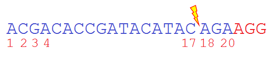
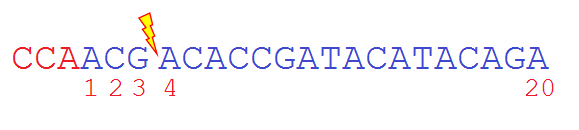
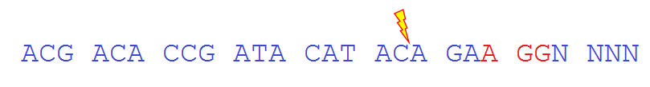

The GTagHD web tool can automatically generate short homology arms for high-efficiency, CRISPR-mediated, precise integration of pGTag vectors and pPRISM vectors to your loci of interest. GTagHD should be used in conjunction with the GeneWeld protocols outlined by Wierson and Welker et al.
The About tab gives a brief overview of how the GeneWeld technology works.
The Instructions and FAQs tab contains detailed instructions and additional information for each step of running GTagHD. Please see the GitHub README for instructions on how to install and run GTagHD locally.
To use the tool, choose the Submit Job tab.
To prevent overloading our server, each user is limited to a single-threaded R process. This means that if you wish to submit multiple GTagHD jobs, you should wait until the first job is done calculating to submit a second job. Opening multiple tabs will not result in multiple calculations; anything submitted in the second tab will wait until the first job is completed before processing. This ALSO means that you should download the output of the first job BEFORE submitting the second job, as the second job will overwrite the results of the first job.
Step 0) Choose which GeneWeld tool/plasmid series you are using. The Iowa State/Mayo Clinic Alliance for Genome Engineering is actively developing several plasmid series for precision genome editing. We currently have two plasmid series available - the pGTag series and the pPRISM series. The pGTag series plasmids are available via AddGene; pPRISM plasmids will be added soon.
The drop-down menu for this step has three options: (1) pGTag, (2) pPRISM, and (3) Custom. The pGTag and pPRISM vector series use different restriction enzymes in the cloning step, and thus differ primarily in the overhangs generated in the processing phase. The "Custom" option is for use with non-GeneWeld plasmids (not recommended), and does not automatically add restriction enzyme site overhangs to the oligonucleotide products.
Step 1) Choose the plasmid gRNA - that is, the CRISPR guide RNA used to liberate the integration cassette from the plasmid. This step has two radio buttons: the "Universal Guide RNA" and "Custom Guide RNA" options. All GeneWeld plasmids use the "Universal Guide RNA" - a sequence without a homologous site in any known vertebrate genome - to liberate plasmid cargos. Since the universal gRNA is unique to the GeneWeld plasmid, this reduces the possibility of the plasmid gRNA producing off-target effects in the genome.
If you choose to use a custom plasmid (again, not recommended), choose the "Custom Guide RNA" radio button, which will allow you to input your plasmid gRNA in a text box. This information is used to add your desired gRNA to the oligonucleotides for incorporation into the plasmid. Please use IUPAC standard nucleotides (A, C, G, T); ambiguous characters are not allowed. Use the "Universal Guide RNA" option if your plasmid gRNA is ALREADY present in your chosen plasmid, and you therefore DO NOT need to clone it into your plasmid.
Step 2) Enter your genomic gRNA. This sequence should be the "base" 20 bp long gRNA sequence, and exactly match your genomic sequence (e.g., some guide sequences generated by other webtools may have 1-2 bases at the 5' end of the guide that are changed to 'G's for T7 promoters. Please input the target sequence as it appears in the genome.) GTagHD uses this information to figure out where the double-strand break will occur in the genome, so that it can extract the homologous sequence. DO NOT include the PAM sequence. Instead, use the radio buttons below the text box to indicate whether your PAM is upstream or downstream of your gRNA - e.g., if you are using CRISPR/Cas9, would the PAM sequence appear as "CCN-gRNA" or as "gRNA-NGG". This gives GTagHD the necessary information to figure out the orientation of your gRNA so that the integration is oriented correctly.
GTagHD assumes that your nuclease behaves similarly to Cas9 proteins. Thus, your nuclease target will generate a double-strand break between the 17th and 18th nucleotides of your 20 bp target sequence if you choose the '3' downstream' option:

Example of an SpCas9 target sequence (blue) and PAM sequence (red) in the 5'-3' orientation. GTagHD requires only the blue target sequence. GTagHD is therefore PAM agnostic.
And the double-strand break will be between the 3rd and 4th nucleotides if you choose the '5' upstream' option:

Example of an SpCas9 PAM sequence (red) and target sequence (blue) in the 5'-3' orientation. This target sequence will induce a double-strand break on the 3'-5' (antisense) strand.
Step 3) Enter the complete genomic DNA sequence (including introns/non-coding regions) containing your gRNA from Step 2. Choose a radio button to use a GenBank or RefSeq accession, and Ensembl accession, or copy and paste a sequence.
For GenBank and RefSeq accessions, please specify a nucleotide sequence. Gene IDs may have many transcripts associated with them, and GTagHD can't generate precise oligonucleotides without a specific seqence. We also strongly recommend that you do NOT use mRNA transcript IDs - if the required homology length spans across a splice site, this will make the oligonucleotide homology span the splice site as well - resulting in non-homologous nucleotides and a failed knock-in.
For Ensembl accessions, please specify a transcript, exon, or protein ID. As with GenBank and RefSeq accessions, Ensembl gene IDs may have many associated transcripts, while transcript, exon, and protein IDs only have a single associated sequence.
When copy/pasting a sequence, please paste in plain text and do not include FASTA headers. Sequence must use IUPAC standard nucleotides and cannot contain ambiguous characters. You must also provide enough sequence context surrounding the target to generate homology arms; for instance, if you want to use 48bp of homology, you should provide at least 50bp of context upstream and downstream of the double-strand break site in your DNA sequence.
Please note that your genomic gRNA should appear exactly once in either the 5' or 3' strand of the sequence, regardless of input choice. GTagHD does not automatically check for off-target sites. There are other tools available for this purpose, like CRISPRScan.
Step 3a) Specify nucleotides to repair a codon break in the genomic locus. If you use a GenBank, RefSeq, or Ensembl accession, GTagHD can automatically determine if your genomic gRNA target induces a DSB in a codon such that a frameshift would be introduced. You can choose to automatically repair this break (recommended.) If this option is selected, GTagHD will add nucleotides to your homology oligonucleotides such that the genomic target will remain in frame, with the codon repaired to create the original amino acid.
If you use a pasted sequence, you can manually select the number of additional nucleotides required to maintain the reading frame (0 - the DSB is between codons; 1 - the DSB occurs between the second and third nucleotides in the codon; 2 - the DSB occurs between the first and second nucleotides in the codon.

In this example SpCas9 target sequence, the double-strand break site is between the second and third nucleotides in the sixth codon displayed. Thus, targeting this site would induce a frameshift upon integration. To prevent this, you should select a single additional nucleotide, and GTagHD will add the appropriate nucleotide(s) (in this case, a single adenine) to the oligonucleotide sequences. If the break was between the first and second nucleotide of the codon, you would specify two additional nucleotides.
Step 4) Select the length of homology to be used. This will be the length of the homology between each end of the plasmid and the genomic locus. We recommend using the default value of 48 nucleotides for best results. Please keep in mind the sequence length requirements mentioned in Step 3 - if your genomic DNA provided in Step 3 doesn't have context, an error will occur.
Step 5) (Optional) Specify the pGTag plasmid you are utilizing and generate a GenBank format file containing the plasmid sequence with your incorporated oligonucleotides. This step has no affect whatsoever on your oligonucleotides. This just gives you the ability to download a GeneWeld plasmid map with your (labeled) oligonucleotides incorporated into the map. To use this feature, hit the "Download Plasmid File" button which will appear below your oligonucleotides after you have hit the "Submit" button for the first time. You can download a different plasmid WITHOUT hitting the "Submit" button again by choosing a different plasmid from the drop-down menu, and then hitting "Download Plasmid File" again. We will be adding additional GeneWeld plasmids to this menu as they become available.
The plasmid maps are in A Plasmid Editor (ApE) format, which is completely compatible with GenBank format (gb) and any tools that use GenBank format.
If there are any problems with the sequences and values you have entered, the GTagHD will attempt to identify the problem and give you advice on how to fix them.
If no errors are present, you can press the 'Submit' button at the bottom of the page to generate your targeting oligos. Your oligonucleotides will appear very quickly. If you are using a GenBank/RefSeq/Ensembl accession, it may take a few seconds to retrieve the corresponding sequence.
If the screen grays out at this stage, congratulations! You have found an error we didn't think of and haven't accounted for yet, and we would GREATLY appreciated it if you filled out a bug report form here to tell us about it. You can also refresh this page and then submit a report using the "Report Bugs or Contact Us" tab.
Once GTagHD finishes processing the information, it will output four sequences: 5' forward, 5' reverse, 3' forward, and 3' reverse oligonucleotide sequences. The restriction enzyme sites for cloning into your plasmid will be lowercase, while the rest of the sequence will be UPPERCASE. These oligonucleotides are ready-to-order, and can be downloaded in a text file after hitting the "Download Oligos" button.
Please see the GeneWeld protocol for detailed instructions on the GeneWeld protocol.
You can also see an example of the inputs using any of the 'Example' links on the left hand column of the 'Submit Single Job' page. The GenBank and Ensembl example IDs belong to the zebrafish "Floating Head" (flh) or noto transcript.
For further information on the algorithm for generating the oligonucleotides, see Designing Homology Oligos for Universal Vectors.
Why does GTagHD only process one job at a time?
To prevent our server from being overloaded, users are limited to running one job at a time. This means that after you submit a job, that job must finish before another job will process. For technical reasons, you should also download the results of your first job before running a second; the results from your second job may overwrite the results of your first job.
Does GTagHD store data inputs?
We do not store any data inputs. When you visit GTagHD, you are interacting with a Docker container created from the Docker GTagHD image. This container only exists while your session is open (i.e., while your web browser is pointed at GTagHD.) Thus, your data inputs are only available to GTagHD for as long as your GTagHD session is active, and are only used to generate your results during that time. The file containing your oligonucleotide sequences is only generated when you click the "Download Oligos" button. The file containing the oligos incorporated into a plasmid is also dynamically generated when you click "Download Plasmid File." Both of these files are created within the temorary Docker container. Once you exit the GTagHD browser window, your session (Docker container) is deleted 60 seconds later, and since everything you did during the session is within that container, it is deleted as well. Therefeore, if you do not download or otherwise save your results, you will have to perform your analysis again.
I chose the option to automatically generate nucleotides to repair a codon break, but no additional nucleotides were generated. Why did this happen?
This can occur if:
If this situation occurs, you can manually paste your sequence of interest, and manually generate codon break repair nucleotides that way.
Why shouldn't I use RefSeq mRNA entries?
RefSeq mRNA entries usually contain the post-spliced DNA sequence. GTagHD creates oligonucleotides based on the sequence it is given, so as far as it can tell, the post-spliced RefSeq mRNA has no introns. If your guide corresponds to a position in the exon where the homology arms would run off the end of the exon (e.g., your genomic guide RNA cuts between the 28th and 29th nucleotides in the exon, and you select 48 bp of homology), GTagHD pulls nucleotides from the adjacent exon, rather than the adjacent intron. TL;DR: if you use RefSeq mRNA accessions, this may result in the generation of oligonucleotides that are not homologous to your genome, and thus will not generate precise integrations. We are discussing ways to address this issue in future GTagHD releases.
How do I correct the error message I received?
Non-standard Nucleotides Errors
These errors are caused by the presence of characters which are not A, C, G, or T in the specified input field. The copy/paste input in Step 3 allows for linebreak characters for ease in copying/pasting from FASTA files. If this error appears, check that your input does not include whitespace characters (e.g., spaces, tabs) and/or ambiguous nucleotide codes (e.g., 'R', 'V', 'Y', etc.).
Input CRISPR Sequence Must Be 20 Nucleotides Long Error
This error is caused by inputting a genomic CRISPR gRNA sequence which does not consist of exactly 20 nucleotides. This sequence should NOT include the PAM sequence; it is only used to identify the location of the DSB site in the genome (GTagHD assumes a Cas9-like DSB, explained in Step 2 above.) When using the GeneWeld protocol to knock-in GeneWeld plasmid cargos, you can use a 19 bp gRNA to induce the DSB, but GTagHD requires the full 20bp sequence to correctly place the DSB in relation to the PAM sequence.
Input DNA Sequence is in FASTA Format Error
This error occurs when a FASTA sequence - specifically, a sequence including a FASTA header - is pasted into the text box for the copy/paste option in Step 3. To correct this error, remove the FASTA header line from the input.
CRISPR gRNA Target Appears Multiple Times Error
This error occurs when the genomic CRISPR gRNA provided in Step 2 is detected in multiple locations in the input genomic DNA. In order for GeneWeld plasmid cargos to be precisely integrated into the genome, the genomic DNA must be cut in a single location. To correct this error, choose a different gRNA unique to the input sequence. While GTagHD will search your input genomic DNA to ensure that your gRNA appears exactly once, it does not automatically check for off-target sites in the genome.
CRISPR gRNA Target is Not Found in Input DNA Error
This error occurs when GTagHD cannot find the specified gRNA within the genomic DNA. The most common cause of this error is pasting in a gRNA sequence which has been modified - e.g., the canonical first two nucleotides have been changed to 'GG' for T7-cloning. To correct this error, input the gRNA sequence exactly as it appears in the genomic DNA. You can use the modified gRNA when actually carrying out the GeneWeld protocol, but GTagHD needs the exact match to correctly identify the DSB location.
Microhomology is Too Long for gRNA/DNA Sequence Error
This error occurs when the location of the DSB in the genomic DNA is such that the specified number of homologous nucleotides aren't present. For example, if the DSB is between the 20th and 21st nucleotides in the input sequence, and 24bp of homology is selected, GTagHD will produce an error because it can only get 20bp of homologous sequence from the input DNA. To correct this error, either select a shorter microhomology length (e.g., instead of 48bp, use 24 or 12) OR provide more sequence at the beginnning or end of your input sequence from which GTagHD can draw homologous nucleotides (the error will tell you where to add the microhomologies.)
Unsupported Ensembl Input Type/Gene Input Error
This error occurs when GTagHD detects that your input accession has a prefix indicating an unsupported accession type. Ensembl identifiers (with a few exceptions) generally consist of a six-letter species identifier (an "ENS" prefix attached to a three-letter species code), followed by a code indicating the accession type - "E" for exon, "T" for transcript, "P" for protein, "G" for gene, etc. GTagHD requires an Ensembl exon, transcript, or protein input; all other Ensembl types (including genes) are not supported. Ensembl exons, transcripts, and proteins all specify unique DNA sequences (in the case of proteins, GTagHD can identify the parent transcript). All other Ensembl entries, especially genes, may have multiple associated sequences, and GTagHD can't tell which sequence to use. To resolve this error, make sure that you are specifying an exon, transcript, or protein.
Ensembl ID Does Not Match a Known Ensembl Type Error
This error occurs when the ID put into the Ensembl ID box in Step 3 doesn't match a known Ensembl format. See the list of Ensembl stable ID prefixes for properly formatted Ensembl accession IDs. Make sure that you are not attempting to input a GenBank/RefSeq ID into this box.
Unable to Retrieve Information for this GenBank ID Error
This error occurs when a properly formatted GenBank ID is input, but GTagHD either can't find a corresponding entry in GenBank. This can occur if the GenBank ID doesn't exist OR if GenBank is down. To correct this error, check to make sure the GenBank ID exists and is input correctly. If GenBank is down try again later.
RefSeq/GenBank Protein Accession ID Error
This error occurs when GTagHD detects that a RefSeq or GenBank protein sequence has been input. While these protein sequences can be mapped back to a parent mRNA, these mRNAs are generally post-spliced and thus inappropriate for use with the GeneWeld protocol. To correct this error, use the nucleotide reference for your gene of interest, rather than the protein ID.
RefSeq/GenBank NUCLEOTIDE ID Format Error
This error occurs when GTagHD detects that an input RefSeq or GenBank ID does not match a nucleotide ID format. See the list of GenBank and RefSeq prefixes for properly formatted GenBank/RefSeq nucleotide IDs. Make sure that you're not attempting to input an Ensembl ID into this box.
Something Really Wonky Happened Error
This error occurs when GTagHD encounters some unanticipated issue (i.e., something not already handled by our error processors) which prevents it from carrying out the necessary processes to generate the GeneWeld oligonucleotides. If you encounter this error, please use the "Report Bugs or Contact Us" tab to submit a bug report so that we can determine what went wrong and fix your issue.
Ensembl Did Not Respond to Our Requests Error
This error occurs when our server attempts to ping Ensembl to determine if it is responding, and in turn receives no response. This is generally an indicator that Ensembl is experiencing issues, and you should try again later.
These warning messages occur when a GenBank accession/ID has improperly formatted or missing exon annotations. GTagHD uses this information to determine if the genomic DSB location would result in an in-frame integration, and adds nucleotides to the oligos to ensure an in-frame integration. If this information is missing, GTagHD can't automaticlly perform this step. It is recommended that you use the copy/paste function and manually specify exons if you receive this error.
This warning message occurs if you input a RefSeq accession which corresponds to a RefSeq mRNA sequence. See the FAQ for why we recommend that you DO NOT use RefSeq mRNA.
If you experience trouble or the website crashes, please submit a bug report using the "Report Bugs or Contact Us" tab, in the upper-right portion of the navigation bar.